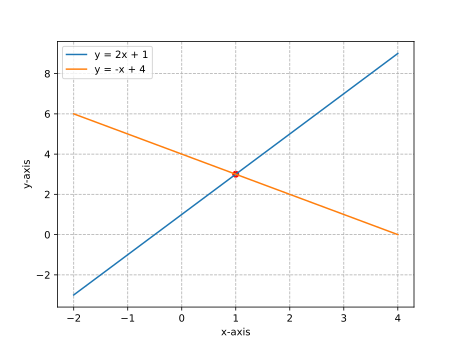
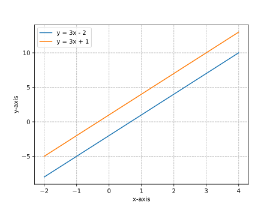
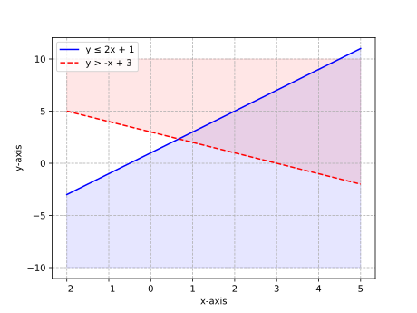
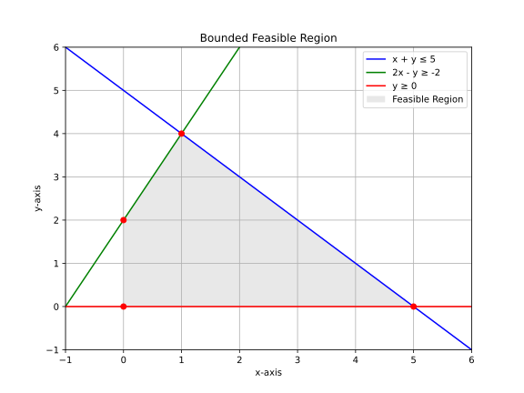
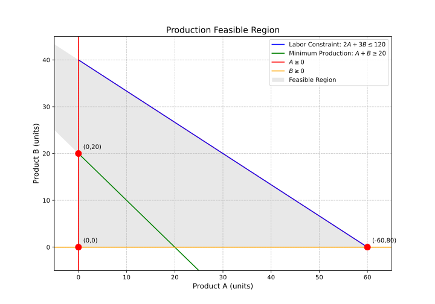

Linear Systems
Chapter 21: Solving Linear Systems by Graphing
Definitions
- System of Linear Equations: Set of two or more linear equations with same variables
- Solution: Ordered pair (x,y) satisfying all equations
- Consistent System: Has at least one solution
- Inconsistent System: Has no solution
- Dependent System: Infinite solutions
Forms or Classifications
| Type | Description | Condition (y=mx+b) |
|---|---|---|
| Independent | One solution | m₁ ≠ m₂ |
| Dependent | Infinite solutions | m₁ = m₂, b₁ = b₂ |
| Inconsistent | No solution | m₁ = m₂, b₁ ≠ b₂ |
Examples
-
One Solution System
- Problem: Solve graphically: [ \begin{cases} y = 2x + 1 \newline y = -x + 4 \end{cases} ]
- Solution:
- Find intersection at (1,3)
- Verify: 3 = 2(1)+1 and 3 = -(1)+4
- Solution: (1,3)

-
No Solution System
- Problem: Solve graphically: [ \begin{cases} y = 3x - 2 \newline y = 3x + 1 \end{cases} ]
- Solution:
- Parallel lines (same slope=3)
- Different y-intercepts (-2 vs 1)
- No intersection → No solution

-
Infinite Solutions System
- Problem: Solve graphically: [ \begin{cases} y = -2x + 3 \newline 4x + 2y = 6 \end{cases} ]
- Solution:
- Second equation simplifies to \( y = -2x + 3 \)
- Identical lines → Infinite solutions
Key Takeaways
- Graphing provides visual solution
- Three possible outcomes
- Best for integer solutions
- Check by substituting solution into both equations
Chapter 22: Solving Linear Systems by Substitution
Definitions
- Substitution Method: Solve one equation for one variable, substitute into other
- Exact Solution: Algebraic method avoids graphing inaccuracies
- Equivalent System: Transformed system with same solution
Examples
-
Basic Substitution
- Problem: Solve: [ \begin{cases} x + y = 5 \newline 2x - y = 1 \end{cases} ]
- Solution:
- Solve 1st eq for y: y = 5 - x
- Substitute into 2nd: 2x - (5 - x) = 1
- Simplify: 3x - 5 = 1 → x = 2
- Find y: y = 5 - 2 = 3
- Solution: (2, 3)
-
Fractional Coefficients
- Problem: Solve: [ \begin{cases} 3x + 2y = 8 \newline y = \frac{1}{2}x - 1 \end{cases} ]
- Solution:
- Substitute y: 3x + 2(½x - 1) = 8
- Simplify: 4x - 2 = 8 → x = 2.5
- Find y: y = ½(2.5) - 1 = 0.25
- Solution: (2.5, 0.25)
-
Real-World Application
- Problem: Ticket prices - child $3, adult $7. Total 100 tickets sold for $500.
- Solution:
- Let c=child, a=adult
- c + a = 100 → c = 100 - a
- 3c + 7a = 500
- Substitute: 3(100 - a) + 7a = 500
- Solve: a=50, c=50
Key Takeaways
- Best when one variable is isolated
- Works for any linear system
- May introduce fractions
- Always verify solution
Chapter 23: Solving Linear Systems by Elimination
Definitions
- Elimination Method: Add/subtract equations to eliminate variables
- Coefficient Scaling: Multiply equations to match coefficients
- Equivalent System: Maintains same solutions through operations
Examples
-
Simple Elimination
- Problem: Solve: [ \begin{cases} 2x + y = 7 \newline x - y = -1 \end{cases} ]
- Solution:
- Add equations: 3x = 6 → x = 2
- Substitute: 2 - y = -1 → y = 3
- Solution: (2, 3)
-
Requiring Multiplication
- Problem: Solve: [ \begin{cases} 3x + 2y = 4 \newline 2x + 5y = 7 \end{cases} ]
- Solution:
- Multiply 1st by 2: 6x + 4y = 8
- Multiply 2nd by 3: 6x + 15y = 21
- Subtract: -11y = -13 → y = 13/11
- Find x: x = (4 - 2(13/11))/3 = 6/11
- Solution: (6/11, 13/11)
-
Special Cases
- Problem: Solve: [ \begin{cases} 4x + 2y = 6 \newline 2x + y = 4 \end{cases} ]
- Solution:
- Multiply 2nd by 2: 4x + 2y = 8
- Subtract from 1st: 0 = -2 → No solution
Key Takeaways
- Best when coefficients are similar
- Can handle more complex systems
- Watch for special cases
- Systematic approach works for all systems
Chapter 24: Applications of Linear Systems
Definitions
- Mathematical Modeling: Translating real situations to equations
- Variables: Represent unknown quantities
- Constraints: Conditions from problem statement
Examples
-
Mixture Problem
- Problem: How many liters of 20% and 50% solutions to make 10L of 32% solution?
- Solution:
- Let x = 20% sol, y = 50% sol
- x + y = 10
- 0.2x + 0.5y = 3.2
- Solve: x = 6L, y = 4L
-
Distance-Rate-Time
- Problem: Boat goes 24km downstream in 2h, upstream in 3h. Find boat and current speeds.
- Solution:
- Let b = boat speed, c = current
- Down: 24 = 2(b + c)
- Up: 24 = 3(b - c)
- Solve: b = 10km/h, c = 2km/h
-
Break-Even Analysis
- Problem: Company has $5000 fixed costs, $10 per unit cost, sells for $25. Find break-even point.
- Solution:
- Cost: C = 10x + 5000
- Revenue: R = 25x
- Set equal: 10x + 5000 = 25x → x = 333.33 units
Key Takeaways
- Identify variables clearly
- Create equations from conditions
- Choose appropriate solving method
- Interpret solutions in context
Chapter 25: Systems of Linear Inequalities
Definitions
- Feasible Region: Solution area satisfying all inequalities
- Boundary Line: Graph of equality equation
- Test Point: Determines shaded region
Examples
-
Basic System
- Problem: Graph: [ \begin{cases} y ≤ 2x + 1 \newline y > -x + 3 \end{cases} ]
- Solution:
- Solid line for y = 2x + 1, shade below
- Dashed line for y = - x + 3, shade above
- Overlapping region is solution

-
Bounded Feasible Region
- Problem: Graph: [ \begin{cases} x + y ≤ 5 \newline 2x - y ≥ -2 \newline y ≥ 0 \end{cases} ]
- Solution:
- Find vertices at intersections
- Shade polygonal feasible region

-
Real-World Application
- Problem: Production constraints - Product A needs 2h labor, B needs 3h. Maximum 120h available. Must produce at least 20 total items.
- Solution:
- Let a=Product A, b=Product B
- 2a + 3b ≤ 120
- a + b ≥ 20
- a ≥ 0, b ≥ 0
- Graph to find feasible production combinations

Key Takeaways
- Graph each inequality separately
- Solution is intersection of all regions
- Dashed vs solid boundary lines matter
- Used in optimization problems